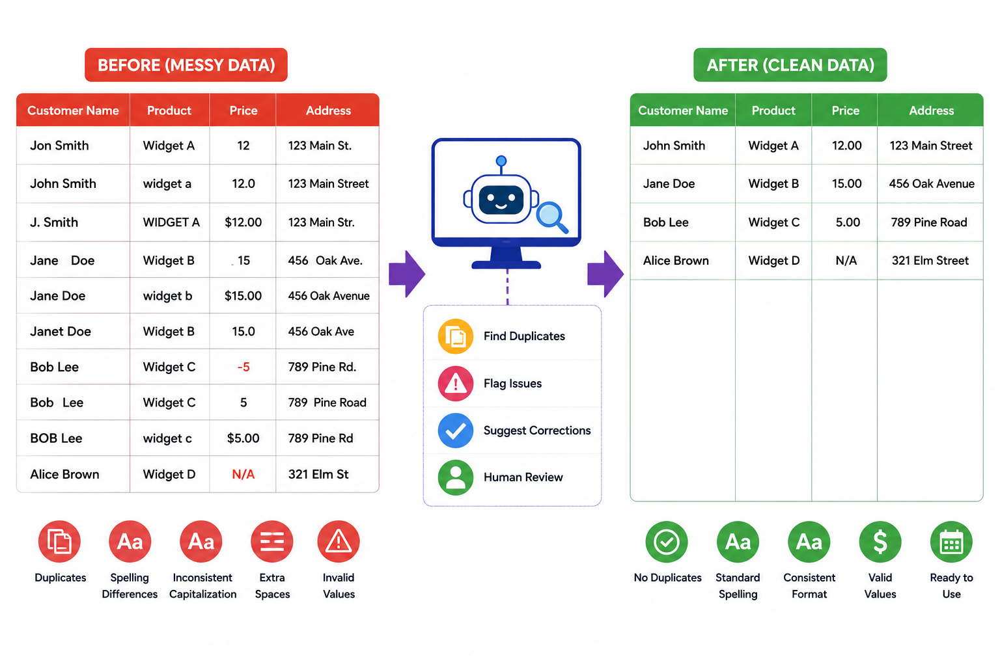
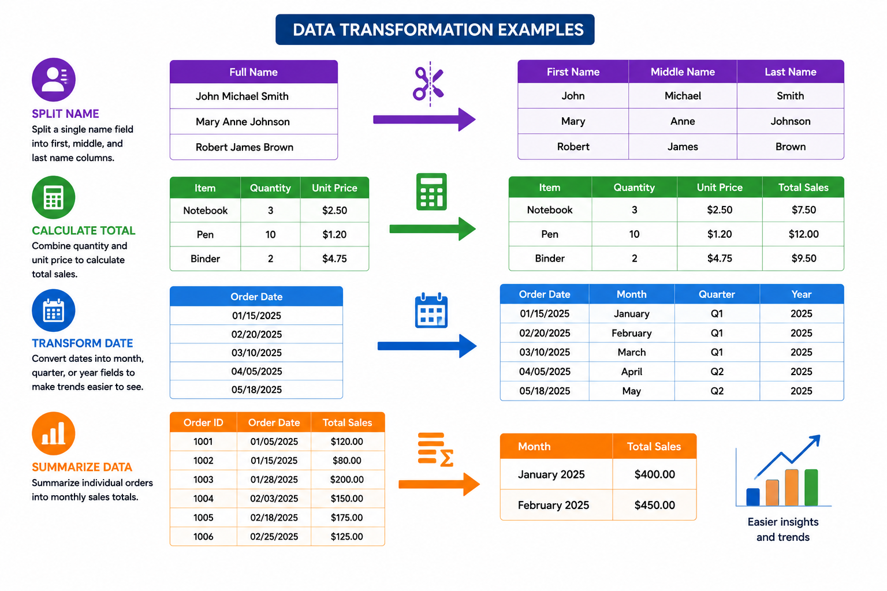

Data Quality
Good decisions depend on good data. A database may be well designed and carefully organized yet still produce weak reports or misleading results if the data itself is incomplete, inconsistent, outdated, or incorrect. Poor data can lead to faulty analysis, wasted time, customer frustration, and lost trust. For that reason, data quality is one of the foundations of useful information.
Quality data is complete, valid, unique, consistent, and timely. Complete data has no important missing values; for example, an order record should include a customer, a date, and a total. Valid data fits what is expected in the field, such as a quantity that is numeric or a state code that matches the approved list. Unique data avoids duplicates, such as the same customer appearing twice in the system. Consistent data uses the same format throughout the database, like storing dates in one standard style or using the same abbreviation for each state. Timely data is current enough to be useful, such as an inventory count that still reflects what is actually on the shelf. Together, these qualities help determine whether data can be trusted for analysis and decision-making.
A helpful way to think about data quality is to ask whether the data is trustworthy enough for its purpose. A sales report, for example, may look polished on the surface, but if duplicate customers, missing prices, or inconsistent product codes are buried inside, the results will be unreliable. The same is true for AI: a model can only produce dependable output when the data it receives is dependable.
Comprehension Check 1 of 5
Data Cleaning
Data cleaning is the process of finding and correcting problems in the data. Real-world data rarely arrives in perfect condition. It may contain duplicate records, spelling differences, inconsistent capitalization, extra spaces, invalid values, or entries that simply do not match the rest of the table. Cleaning is the work of turning that messy input into something dependable enough to store, analyze, and share.
For example, a customer table might contain Jon Smith, John Smith, and J. Smith even though all three refer to the same person. A product list might include 12, 12.0, and $12.00 for the same price. An address field might hold 123 Main St., 123 Main Street, and 123 Main Str. in different rows. Cleaning helps identify these issues and bring the data into a usable form.

AI can help by scanning large datasets quickly, flagging suspicious values, and suggesting corrections. It is especially useful when the data is too large for manual review. Even so, important changes should not be applied silently. In business settings, AI should recommend fixes, not make unreviewed edits to the data. Sometimes the person working with the data can make the correction directly. Other times, the issue must be returned to the source system or to a data steward so the underlying problem can be fixed.
Comprehension Check 2 of 5
Missing Values
Missing data is not automatically bad data. A blank value may mean the information was not collected yet, was not applicable, or is still unknown. The important question is not simply whether a value is missing, but whether the missing value affects the decision being made. A middle name may be harmless if absent. A missing salary, product category, or shipping address may be much more serious.
Sometimes the best choice is to leave the value missing and document it clearly. That is often better than guessing. In other situations, missing data can be estimated from similar records. For example, if a salary value is missing, an AI tool may compare employees with similar titles, departments, duties, and experience levels and suggest a likely estimate. That may help with analysis when the missing value is only one part of a larger pattern.
Still, estimation must be used carefully. In some situations, such as budgeting, forecasting, or broad reporting, filling gaps may improve the usefulness of the data. In other situations, such as legal, medical, or financial records, the safer choice is to preserve the missing value and treat it as unknown. Information systems work often requires choosing between completeness and honesty. A full table is not always a trustworthy table.
Comprehension Check 3 of 5
Standardization
Standardization makes data consistent so it can be compared, combined, and interpreted more easily. When the same kind of information appears in different formats, it becomes harder to sort, search, and match records. A system may hold dates as 03/15/2025, 2025-03-15, and March 15, 2025, or store state names as UT, Utah, and utah. Those differences may seem small, but they create friction when data from different sources must be merged.
A standardized format removes that friction. Dates can be stored one way across the system. Names can follow one capitalization pattern. Codes and categories can use one approved spelling. This improves matching between tables and makes reporting more dependable. Standardization also makes the data easier to read and less likely to be misinterpreted by users or software.
AI can help identify inconsistent formats and suggest common standards. It may detect that one data source uses full state names while another uses abbreviations, or that one system records product categories with mixed case while another uses uppercase codes. It can even help map records from different systems into one common structure. However, the final standard should come from the business rules of the organization, not from the tool itself.
Comprehension Check 4 of 5
Data Transformation
Data transformation changes data into a form that is more useful for a specific task. Sometimes the raw data is present, but it is not arranged in the way the analysis needs. Transformation may split fields, combine fields, convert data types, summarize rows, reshape tables, or enrich records with external information. This is often the step that turns raw operational data into analysis-ready data.
One common example is splitting a single name field into first, middle, and last name columns. That makes the data easier to sort alphabetically, address personally in messages, or search more precisely. Another example is combining quantity and unit price to calculate total sales. A student or analyst might also transform dates into month, quarter, or year fields so trends are easier to see. A table of individual orders can be summarized into monthly sales totals, which is far more useful for some reports than a list of every transaction.

Transformation is also used when external data is added. A company may compare its own sales to an industry average, or merge customer records with geographic data to study regional patterns. AI is especially useful here when data must be extracted from text, categorized, or mapped from one format into another. It can pull structured details from emails, forms, or documents and help convert them into a clean table structure.
Comprehension Check 5 of 5
Data Validation
Data validation checks whether data follows the rules before it is stored or used. It protects the database by catching problems at the point of entry or import instead of allowing them to spread through the system. Validation can check for required fields, acceptable ranges, correct formats, and valid relationships between records.
For example, a quantity field should not accept negative numbers unless the business rule allows returns or adjustments. A date field should be entered in the proper format. A foreign key should point to an existing record in the related table. An email address should follow the expected pattern. These checks help keep the database dependable before reporting or analysis begins.
Validation is more than a technical filter; it is a business safeguard. A payroll system may reject an hourly rate that is far outside the allowed range. A registration form may require that a student ID is present before submission. A sales system may prevent an order from being entered for a customer that does not exist. These are examples of rules that help maintain accuracy and referential integrity.
AI can support validation by spotting unusual entries, comparing values against expected patterns, and flagging records that look suspicious. It can notice that a transaction amount is far larger than similar transactions or that a date falls outside the expected timeline. Even so, AI should not replace business rules. It can help identify likely errors, but the organization still needs clear rules that define what valid data is.
AI and Data Quality
AI is most useful in data quality work when it acts as an assistant. It can process large volumes of records quickly, identify duplicates, suggest corrections, detect outliers, classify records, and extract structure from unstructured text. These strengths make it valuable for large databases, messy source systems, and repetitive quality checks.
But AI should be used with caution. It can make mistakes, overgeneralize patterns, or reflect the flaws in its training data. If the source data is biased or incomplete, the recommendations may also be weak. That is why AI should support human judgment rather than replace it. The best results come when AI speeds up the work and people provide the business context, review the exceptions, and approve the final changes.
Why Data Quality Matters
Data quality is really about trust. Reports, dashboards, transactions, and AI outputs all depend on the reliability of the data behind them. When data is cleaned, standardized, validated, and transformed carefully, it becomes far more useful and far less risky. When it is neglected, even a powerful system can produce confusion instead of insight. High-quality data is what allows an organization to act with confidence.
AI-Assisted Data Cleaning and Transformation
Data cleaning and transformation prepare data for analysis by correcting errors, standardizing formats, combining sources, filtering records, and creating useful fields. These steps may include converting dates, handling missing values, correcting inconsistent spelling, removing duplicate records, joining tables, reshaping data, or creating calculated variables. Cleaning decisions should be based on documented rules rather than hidden changes. Professionals should preserve the original data whenever possible and create a separate processed version so that transformations can be reviewed or repeated.
AI can help generate formulas, queries, scripts, or transformation recommendations. It can also explain unfamiliar code and suggest tests for common problems. Nevertheless, AI-generated transformations may use the wrong column, remove records unexpectedly, change units, or apply a rule inconsistently. A professional must compare the result with an expected outcome and test edge cases before using the transformed data. The goal is not merely to clean data faster, but to create a process that is accurate, reproducible, explainable, and appropriate for organizational use.
Chapter Completion
Answer all five comprehension questions, then check your work.
Chapter complete
Copy or write down this access code. You will need it later in class to receive your points.
valid-data